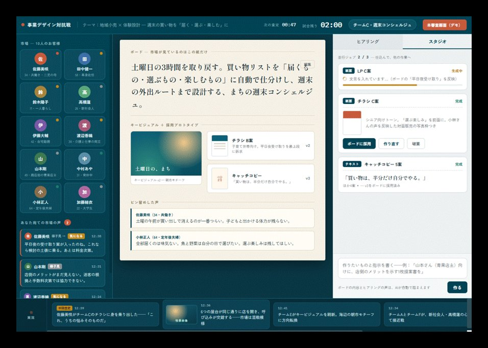
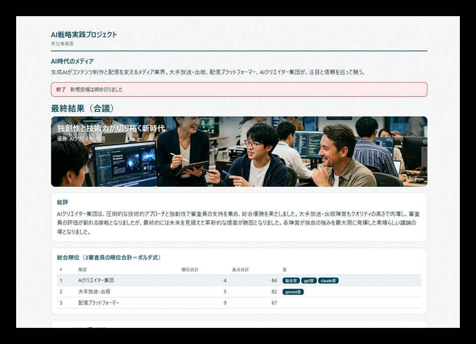
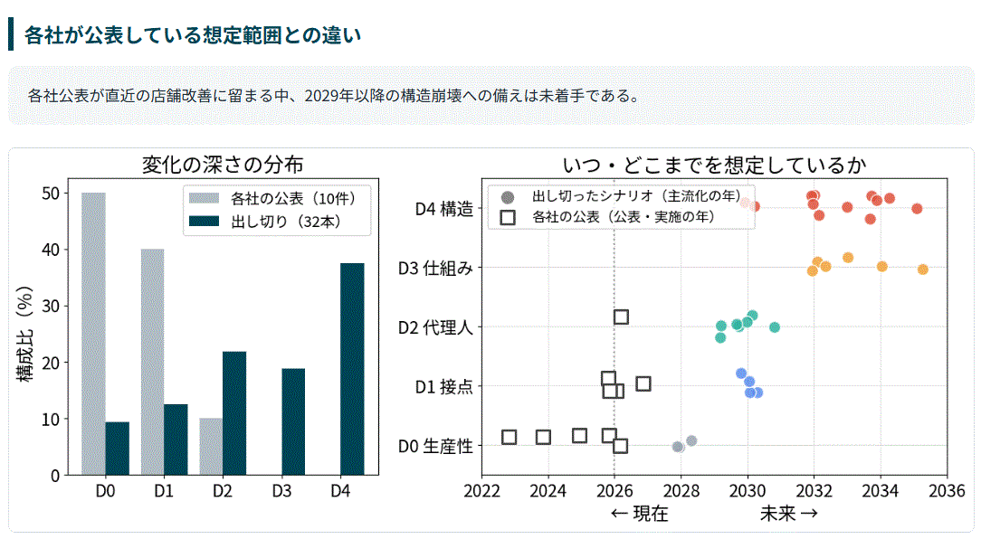

AIを「使う人」から、
AIで事業を変える人へ。
インターネットの普及期に世界を変えたのは、Excel教室に通った人ではなく、GoogleやAmazonを生み出した人でした。AIでも、同じことが起きようとしています。
「AI前提で事業戦略を作る」ための場です。月1回・平日夜のオンライン実践セッションを開催しています。各回の報告と次回のご案内は、無料のメールでお届けします。


経営大学院教員・スタートアップ役員 ほか
無料で案内を受け取る
下のボタンから、メール登録のページ（Mailchimp）が開きます。お名前とメールアドレスを入力すると登録が完了します。
無料で案内を受け取る- メール登録は無料です
- いつでもワンクリックで配信停止できます
メール登録は無料。有償メンバーは月額制です。
有償メンバー
月額 6,300円＋税 初月無料 （早期参加枠）月1回のオンライン実践セッションへの参加に加え、録画と資料のアーカイブ、メンバー限定コミュニティをご利用いただけます。更新日（毎月15日）の前日までに解約すれば、その月の費用はかかりません。セッションは平日20:00〜、Zoomで約2〜2.5時間。
開催ごとに、こんなメールが届きます。
開催にあわせて、月2回ほど。読むだけでも、この場で何が起きているかがわかる内容です。
当日の報告
その回の問い、作った仕組みやアプリの画面、議論で見えた論点を、画像付きで振り返ります。
次回のご案内
次のテーマと日程をお知らせします。有償メンバーとしてセッションに参加するかどうかは、内容を見てから決められます。
プロジェクトの広がり
新しい実践アプリや公開資料など、場の動きをお知らせします。
問いから始め、作り、戦略に戻す。
各回約2〜2.5時間、オンライン（Zoom）で開催します。戦略上の問いから出発し、AIを組み込んで動く仕組みを作り、自社・自業界の競争の前提がどう変わるかまで考えます。
戦略的な問いから始める
その回のテーマがなぜ重要かを、自分の事業の文脈で言語化します。
手を動かして、動く仕組みを作る
AIとの対話から、コードやアプリへと段階的に発展させます。
戦略視座に立ち戻る
作ったものを自社にどう適用し、競争のルールがどう変わるかまで考えます。

第5回「AI戦略の未来シナリオ」（2026年9月）

業界の未来シナリオと、自社の判断で分かれる道筋を、数十ページのレポートとして各自がAIで描きました。簡易的な試作とはいえ、かつて戦略コンサルが数ヶ月をかけた規模の作業が、約10分・API費用数百円で形になります。では、誰もが使えるいま、差はどこでつくのか。そこまでを議論しました。
これまでの開催履歴を見る →大企業などでAI推進を担う方、コンサルタント、個人事業主など、さまざまな立場のビジネスパーソンが参加しています。
※ 97%は、第1〜5回の参加者アンケート（延べ117件）で「参加・視聴して良かった」に「とてもそう思う」「ややそう思う」と回答した割合。
参加者の声
第1〜5回の参加者アンケートの自由記述をもとに、趣旨を変えずに要約・再構成しています。
「AIは議事録や資料づくりの便利ツールだと思っていました。事業の戦略や意思決定に組み込むという発想そのものが新鮮でした。」
「普段はAIに相談する程度でしたが、AIに仕組みを作らせて手元で動かす体験ができました。「もしかしたら自分にもできるかも」と思えたのが大きかったです。」
「ここまで来ているのかと、良くも悪くも危機感を持ちました。同時に、自分の業務でどう活かすかを考えるきっかけをもらいました。」
「社内でAI活用を広げようとしていましたが、なかなか速度が上がらずにいました。身近な題材で考え方を体験でき、社内での広げ方のヒントになりました。」
主催者
栗山 実 Minoru Kuriyama
株式会社アンテカニス 代表取締役 ／ 多摩大学大学院 特任教授 ／ グロービス経営大学院 教員
マッキンゼー・アンド・カンパニーで戦略コンサルティングに従事後、独立。AI・データ戦略の企業助言、人材育成、スタートアップの事業創造・経営に携わる。東京大学理学部物理学科卒・同大学院修士課程修了。
プロフィール詳細 →